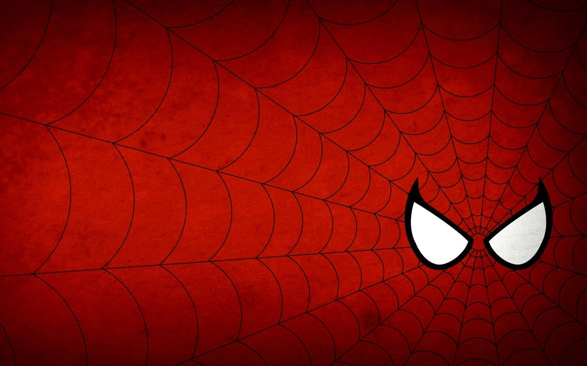

PROJET PERSONNEL · SITE THÉMATIQUE
Avengers Assemble
Un site consacré aux héros Marvel, avec une identité visuelle centrée sur Spider-Man et des pages dédiées à plusieurs personnages.
WordPressElementorThème Astra
Voir le site ↗

Le projet
J’ai réalisé ce site personnel avec WordPress et Elementor pour présenter un univers qui m’intéresse et travailler la composition de pages web.
La page d’accueil met en avant Spider-Man à travers un grand visuel, des textes de présentation et des liens pour explorer le personnage. Le menu donne accès à d’autres pages consacrées notamment à Hulk, Iron Man et Thor.
Éléments réalisés
- Mise en page avec Elementor et le thème Astra.
- Navigation entre les pages des personnages.
- Intégration d’images et de contenus de présentation.
- Organisation de contenus dans des onglets interactifs.